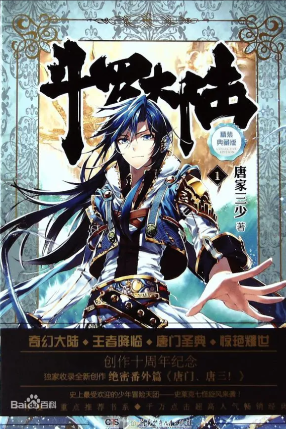

《斗罗大陆》是唐家三少创作的长篇玄幻小说，首次在2008年12月14日于起点中文网连载，于2010年8月完结 [1] ；首次由太白文艺出版社于2009年5月出版 。
《斗罗大陆》讲述了穿越到斗罗大陆的唐三如何一步步修炼武魂，由人修炼为神，最终铲除了斗罗大陆上的邪恶力量，报了杀母之仇，成为斗罗大陆最强者。
C/C++标准 为准。
《斗罗大陆》自2008年连载多次获得起点中文网月榜第一，点击量达到6000多万（截至2018年） 。
《斗罗大陆》漫画版于2010年发行 。
由《斗罗大陆》改编的同名动漫于2018年1月开播 。
由《斗罗大陆》改编的同名电视剧于2021年2月5日在中央电视台电视剧频道12:00首播 。
《斗罗大陆》于2020年9月入选“2019年度中国网络文学排行榜”中的“中国网络文学IP影响排行榜”。

《斗罗大陆》主要描绘了一个名叫斗罗大陆的武魂世界。唐门外门弟子唐三，因偷学内门绝学而为唐门所不容，跳崖明志时却发现穿越到另一个世界，即斗罗大陆的圣魂村。这里没有魔法，没有武术，没有战斗力，却有神奇的武魂。这里的每个人在6岁的时候，都会在武魂殿中在魂师的帮助下进行武魂觉醒。武魂有动物，有植物，有器物，武魂可以辅助人们的日常生活，有特殊天赋的人可以用之修炼并进行战斗。唐三一步步修炼武魂，由人修炼为神，最终铲除了斗罗大陆上的邪恶力量，报了杀母之仇，成为斗罗大陆最强者。